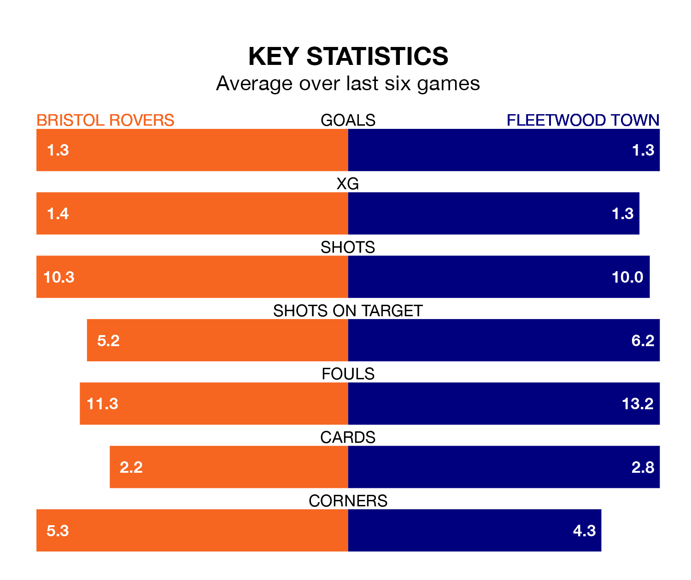

Struggling Fleetwood Town face Bristol Rovers away at the Memorial Stadium on Tuesday looking to build on a win in their last league outing.
After securing all three points with a 3-0 victory over Port Vale on Saturday, the Cod Army sit 23rd in EFL League One.
They travel to play a Rovers side 11th in the standings, who also won their last match, 1-0 against Exeter City.
In the last 10 years, Rovers and Fleetwood have played each other on 12 occasions. Rovers won four of them, Fleetwood three, and they drew five times.
On average, the Gas scored 1.1 goals and the Cod Army 1.2 in those matches.
Their last meeting was on April 10, when Rovers won 2-1 away.
Rovers are in disappointing form in EFL League One, with two wins and four losses from their last six games.
With a win and a draw over that period, Fleetwood's form is slightly worse – they have taken four points from 18, compared to the Gas's six.
With 28 goals in 29 games so far this season, Town are scoring at below the league average rate with 1.0 goals per game. And they are conceding more than average, letting in 50 goals at a rate of 1.7 per game.
The hosts, meanwhile, are above average scorers, with 1.4 goals per game, compared to a league average of 1.3. They have conceded 1.3 goals per game.
Rovers' Aaron Collins is among the league's most creative players, racking up nine assists in 28 appearances so far this season, and holding second spot in EFL League One's assist charts.
For the Cod Army, Danny Mayor has set up the most goals, having laid on three assists in 21 games.
Tuesday's match will be refereed by Charles Breakspear, who has taken charge of 12 EFL League One games so far this season, issuing four red cards and booking 62 players. He has awarded six penalties.
The last Rovers game Breakspear refereed was a 2-1 away win against Charlton Athletic on August 15. He is yet to oversee a match featuring Fleetwood this season.
Updated: 10:28 (UTC), 06/02/24